| Common Name |
Latin Name |
Frequency |
Other Information |
Picture
(click to enlarge) |
| A, B |
| Barn Owl |
Tyto alba |
very rare |
No sightings since 1962. Probably bred up to 1962. |
|
| Barnacle Goose |
Branta leucopsis |
very rare |
One sighting very early one morning in Mar 1998, of 6 birds flying over. |
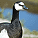 |
| Black Headed Gull |
Larus ridibundus |
regular |
Regular visitor between Oct and Mar. Between 10 and 20 birds often in the lake area. Regularly seen on roost flights in large numbers. |
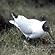 |
| Blackbird |
Turdus merula |
resident |
Between 37 and 44 pairs, also good numbers of winter visitors. Often the victims of nest robbing by magpies. |
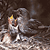 |
| Blackcap |
Sylvia atricapilla |
summer/winter |
Up to 12 pairs breed-one or two birds winter in local gardens. Earliest sighting 1/4/90. Latest 5/10/89. (Wintering bird seen 15/11/93 and 6/11/95 and 25/12/99). In 2002 a male was seen daily from 05/01/02 to 27/03/02. The first migrant was noted singing on 04/04/02, then 12 singing males by 14/04/02. |
|
| Blue Tit |
Parus caeruleus |
resident |
Up to 1996, around 36 pairs bred successlfully in nest boxes, from which between 260-280 juveniles fledged. From 1997 there was a serious decline in the success rate of boxes due to predation by a Great Spotted Woodpecker. In 1999 only 136 Blue Tits fledged from 21 surviving boxes (see Nestbox Records for Gledhow Valley). However, years 2000 to 2002 have seen a recovery to 30 successful pairs in 2002. A further 25 pairs probably breed in natural holes. |
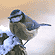 |
| Brambling |
Fringilla montifringilla |
winter |
Seen occasionally, usually between 2 and 20 birds. Not seen in 94 and 95 but 2 on 10/1/96 then up to 20 between Oct 97 and Feb 98. One on 06/01/02 and 4 on 24/02/02. |
|
| Bullfinch |
Pyrrhula pyrrhula |
resident |
Possibly 3 pairs breed. 2 pairs seen on 30/12/01. |
|
| Buzzard |
Buteo buteo |
very rare |
Extremely rare fly over sightings, 1 in April 1982 and 1 in Feb 1985. |
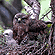 |
| C |
| Canada Goose |
Branta canadensis |
occasional |
Seen most years in small parties once or twice, on the lake or flying over. 16 over on 14/6/99. 9 over 02/06/01. |
|
| Chaffinch |
Fringilla coelebs |
resident |
Possibly 6 pairs breed. 8 birds seen on 21/03/01. |
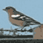 |
| Chiff Chaff |
Phylloscupus collybita |
summer |
4 or 5 pairs probably breed. Earliest sighting 17/03/93 and 17/03/02. Latest 5/10/89. One heard singing 01/10/00. Wintering bird seen 20/12/01 |
|
| Coal Tit |
Parus ater |
resident |
Possibly 8 pairs breed. Seen with other tit species in large mixed flocks in winter. |
|
| Collared Dove |
Streptopelia decaocto |
resident |
5-6 pairs breed in the Gledhow Park area, but more pairs in other streets surrounding the woods. 15 birds in one tree in Gledhow Park Allotments Dec 93. |
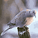 |
| Common Gull |
Larus canus |
occasional |
Sometimes seen on Gledhow rooftops. Regularly seen on roost flights. Seen outside the recording area regularly on Gledhow school playing fields. |
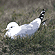 |
| Coot |
Fulica atra |
occasional |
Originally an occasional winter visitor, now a resident breeding bird. A lone bird wintered in 92-93 and returned in Sep 93' to stay until Feb 94' when it was joined by a 2nd bird before departing. Presumably the same bird returned 5/10/94 to year's end. Then in 95' to 6/2 and again in 96' to 28/3. From 2000 a pair have resided with successful breeding in 2001 and 2002. |
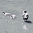 |
| Cormorant |
Phalacrocorax carbo |
very rare |
Only 4 records of a single bird flying over in July 1984, another singleton flying over late evening to Mar 1993, then 1 bird over mid afternoon 15/10/97. Another lone bird on 12/4/99 and 1 over 21/05/01. |
|
| Crow |
Corvus corone |
resident |
Possibly 6 breeding pairs. A winter roost of up to 32 birds has developed in recent years. |
|
| Cuckoo |
Cuculus canorus |
very rare |
Extremely rare visitor. 2 birds seen chasing and calling whilst flying over the woods on two dates in May 91. |
|
| Curlew |
Numenius arquata |
very rare |
Seen regularly up to 1962, in both Spring and Autumn. Only 4 recent records. 3 over 14/4/91, 1 over 2/9/97, 1 over 9/4/96 and a few over at night 22/09/01. |
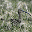 |
| D |
| Dipper |
Cinclus cinclus |
occasional |
One or two birds seen regularly between June and April up to 2000, but no sightings in last 2 years. Could be heard singing in any month. A bird seen prospecting for nest sites in 1991. A juvenile bird seen in June 1987. |
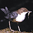 |
| Dunnock |
Prunella modularis |
resident |
Possibly 18 pairs. Regular performers at any garden feeding stations. |
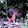 |
| E, F |
| Fieldfare |
Turdus pilaris |
occasional |
Occasional sightings of flyover birds annually between Oct and April, typical examples being 40 over 23/10/94 and 2 over 17/10/01. |
|
| Firecrest |
Regulus ignicapillus |
very rare |
One sighting of a female from 1/4 to 3/4/94. The bird fed on an area frequented by Tits, Goldcreasts and Chiff Chaffs but did not associate with other birds. Gledhow's best ever bird? |
|
| G |
| Gadwall |
Anas strepera |
very rare |
A pair from Dec 1985 to Apr 1986 and from Nov 86 to 11/4/87. |
|
| Garden Warbler |
Sylvia borin |
summer |
Seen in 87, 88, 90, 92, 95, 98 and 2002. 2 birds singing 5/5/96. Earliest sighting 05/05/96. Latest 29/8/95. No proof of breeding. |
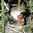 |
| Goldcrest |
Regulus regulus |
resident |
Resident in small numbers, plus winter visitors. Probably breeds 1 or 2 pairs, except after the hardest winters. Four birds seen on 17/03/02. |
|
| Goldeneye |
Bucephala clangula |
very rare |
2 immature birds in Oct 1993 were the first record since a female in 1960. Since then, a lone bird on 21/10/97. |
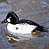 |
| Golden Plover |
Pluvialis apricaria |
very rare |
A single sighting of a small party west in snow in Dec 1970. |
|
| Goldfinch |
Carduelis carduelis |
winter |
Not seen between May and August. Between 6-12 birds seen in winter periods. Often heard flying over in singles or charms. |
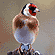 |
| Goosander |
Mergus merganser |
very rare |
3 over on 17/12/01 the only sighting. |
|
| Great Spotted Woodpecker |
Dendrocopus major |
resident |
Breeds annually, probably two pairs. Council cull of dead trees may have reduced the number of pairs from 3 to 1pair for 1995 to 1997, but 2 pairs probably bred from 1998 onwards. |
|
| Great Tit |
Parus major |
resident |
Up to 19 pairs breed successfully in nest boxes, from which around 110-120 juveniles fledge. Probably up to 10 more pairs breed in natural holes. A slight decline in 1998 and 1999 due to predation by a Great Spotted Woodpecker, with only 56 young fledging from 9 successful boxes in 1999. Recovered and 19 pairs with success in 2001 and 2002. In the last few years at least one pair per year have attempted a second brood, with incubation noted, but not successful as yet. However, 3 pairs on 2nd clutches in June 2002. |
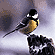 |
| Greater Black Backed Gull |
Larus marinus |
occasional |
Only seen on roost flights. |
|
| Green Woodpecker |
Picus viridis |
rare |
Birds seen in Aug 81, May 85, June 93,1 on 30/5/97 and1 on 23/05/02. |
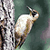 |
| Greenfinch |
Carduelis chloris |
resident |
Breeds in surrounding gardens only. Usually seen flying over the streets and woods. Attracted to seeds at garden feeding stations, with up to 8 in winter months. |
|
| Greenshank |
Tringa nebularia |
very rare |
A single sighting of a bird flying over Gledhow in Aug 78. |
|
| Grey Goose Species |
|
very rare |
40-55 over Jan 1962. 100+ over Dec 1962. 50 over 19 Oct 97. |
|
| Grey Heron |
Ardea cinerea |
occasional |
Occasionally seen flying over (2-3 times per year). 1 bird visited the lake on a few occasions in July 1988. 2 birds over at dusk 12/7/94, 2 over on a September evening in 1997, 1 over 29/03/00 and 10/01/02 are typical examples. |
|
| Grey Partridge |
Perdix perdix |
very rare |
A pair bred in 1961, but no sightings since then. Pre 1961, before housing developments, this species was a resident breeder. |
|
| Grey Wagtail |
Motacilla Cinerea |
resident |
Resident except for the months of May and June. Probably breeds nearby. Usually 2 birds, but a party can usually be seen post-breeding, but in 97' bred on stream next to allotments, Gledhow Valley Road. |
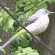 |
| Greylag Goose |
Anser anser |
very rare |
One bird on lake in 1988, 6 over once in 1989. |
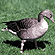 |
| H |
| Hawfinch |
Coccothraustes coccothraustes |
very rare |
1 bird in 1961 and 1 sighting in 1958. |
|
| Herring Gull |
Larus argentatus |
occasional |
Only seen on roost flights. |
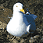 |
| House Martin |
Delichon urbica |
summer |
No local breeding (but does breed just outside the recording area). Family parties seen migrating in Sep and Oct. 50 flying over 22/09/01. Earliest sighting 14/4/91. Latest 6/10/89. |
|
| House Sparrow |
Passer domesticus |
resident |
Breeds in small numbers in the surrounding streets. Up to 20 birds used to frequent the area around Gledhow Park allotments before the houses were built on that site. Since then, a worrying decline with 10 on 20/02/01 and 4 on 17/03/02. |
|
| I, J |
| Jackdaw |
Corvus monedula |
occasional |
Never seen in the woods, occasionally seen perching on local rooftops and frequently seen flying over the woods. |
|
| Jay |
Garrulus glandarius |
resident |
4 pairs probably breed. Up to 12 birds seen together on occasions. Can be heard mimicking other birds e.g. buzzard! |
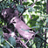 |
| K |
| Kestrel |
Falco tinnunculus |
rare |
Occasional winter visitor, usually single birds in winter periods. |
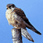 |
| Kingfisher |
Alcedo atthis |
winter |
Winter visitor. Usually single birds seen on ice free channels by the lake, between Aug and Mar only. 1 bird found dead in 1988, 2 birds seen together on a few occasions over the years. |
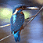 |
| L |
| Lapwing |
Vanellus vanellus |
occasional |
Very occasional sightings, mainly associated with hard weather movements. 61 west in Nov 89', 20 over 27/2/94, after snow/ice period. Also 1 over 13/9/93 and 1 over 8/4/99. |
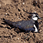 |
| Lesser Black Backed Gull |
Larus fuscus |
occasional |
Only seen on roost flights. |
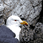 |
| Lesser Spotted Woodpecker |
Dendrocupus minor |
occasional |
Seen in most years. A pair attempted to breed in 1992 but were driven off by Great spotted Woodpecker. In 1995 1 male drummed on the same tree from 11/3/95 - 23/4/95. Best time to see this bird is March to May, confirmed by sightings on 11/04/01 and 09/04/02. |
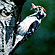 |
| Lesser Whitethroat |
Sylvia corruca |
very rare |
Rare summer visitor. 1 bird singing on 3 days in May 93 & 2 weeks in 94' in suitable hawthorn. The only records. |
|
| Linnet |
Carduelis cannabina |
very rare |
Apart from very occasional fly over sightings,the only record is of a pair that frequented the allotments on Gledhow Park Ave. for 1 week in the middle of a spell of severe winter weather.13/2 -21/2/91. 1 further sighting of 5 over 25/9/96. |
|
| Little Grebe |
Tachybaptus ruficollis |
summer |
Has bred annually since 1985 (except 1992). Usually arrives March and departs Oct/Nov. In 1994 1 bird arrived in Jan and stayed though 7/8 of the lake freezing up. Unsuccessful breeding in 2001 and no sightings at all in 2002. Presumably due to the annexation of the lake by the Coots. |
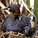 |
| Little Owl |
Athene noctua |
very rare |
No sightings since 1967. Seen in 1966 and bred up to 1967. |
|
| Long Tailed Tit |
Aegithalos caudatus |
resident |
Possibly 5 pairs breed. Family parties regular in winter. |
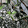 |
| M |
| Magpie |
Pica pica |
resident |
Probably 20 pairs breed in Gledhow Valley. 2 roosts, 1 at western end and 1 at eastern end contained 255 birds in Dec 93. This increased to 305 birds by Dec 94. Presumably the roost is from all surrounding neighbourhoods. Then 320 on 18/1/96 & 340 on 5/2/97 and 335 on 6/2/99. Regularly seen predating the nests of Blackbirds, Song and Mistle Thrushes. |
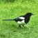 |
| Mallard |
Anas platyrhynchos |
resident |
Breeds most years. The lake usually holds between 20 and 30 birds. However, in Oct 1989, numbers on the lake built up to a maximum of 104, possibly due to low water levels on nearby lakes and reservoirs. 36 on 30/08/00. Six broods noted in 2002. |
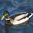 |
| Mandarin Duck |
Aix galericulata |
occasional |
- |
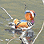 |
| Marsh Harrier |
Circus aeruginosus |
very rare |
A single sighting of one bird drifting across the valley 4pm 19/05/01. |
|
| Marsh Tit |
Parus palustris |
rare |
Scarce visitor, only sightings in 73, 75, 2 birds in Feb 84 and 1 bird in Mar 94, seen and heard 50yds from a calling Willow Tit. |
|
| Meadow Pipit |
Anthus pratensis |
regular |
Regular flyover sightings. Birds seen throughout the year usually in singles, with occasional small parties in winter. One bird landed on the Gledhow Park allotments for a brief visit in Mar 93. Birds seen in association with hard weather. |
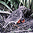 |
| Mistle Thrush |
Turdus viscivorus |
resident |
Possibly 5 pairs. As early breeders, suffer much harrassment by magpies. Parties of 10-12 birds seen in early Autumn. 20 birds feeding together 10/8/94. Five pairs noted on 19/4/99. |
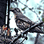 |
| Moorhen |
Gallinula chloropus |
resident |
Up to 4 pairs usually try to breed on the lake. Maximum of 12-14 birds post breeding. Birds disperse to leave up to 10 wintering birds, but 15 on 6/12/99. |
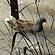 |
| Mute Swan |
Cygnus Olor |
very rare |
Only 2 records of a single bird flying over early morning - 7/10/92 and 1 over 04/04/02. |
|
| N |
| Nuthatch |
Sitta europaea |
resident |
4 pairs probably breed in natural holes. Seen in amongst tit flocks in winter. |
|
| O |
| Osprey |
Pandion haliaetus |
very rare |
Extremely rare fly over sighting - 1 in May 1989 only. |
|
| Oystercatcher |
Haematopus ostralegus |
rare |
Four sightings, in Aug 1980 of 'birds in flight', 1 flyover bird in July 95, one over 22/5/96 and 2 over calling 8.30am on 22/05/02. |
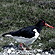 |
| P |
| Pheasant |
Phasianus colchicus |
rare |
Birds seen in Nov 1982, April 1983, a pair regularly in 1989 and a regular male in 1990. No sightings since. |
|
| Pied Flycatcher |
Ficedula hypoleuca |
very rare |
No definite sightings in Gledhow Valley, but seen twice in the Old Park Road area of Roundhay in August 85 and April 88. One possible sighting in Gledhow Woods in May 90. |
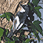 |
| Pied Wagtail |
Motacilla alba |
occasional |
Occasional sightings of flyover birds and on the footpaths or Gledhow Valley Road and the surrounding streets. Roost flights seen in winter e.g. 13 on 13/11/95 |
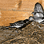 |
| Pink Footed Goose |
Anser brachyrhynchus |
rare |
Small skeins over December 1970, 200 over Feb 1982, 100 over Mar 1984, 40 over Oct 1984, 100 over Jan 1986, 140 over Feb 1991. A small skein heard flying over at night on 10/10/99. |
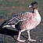 |
| Pochard |
Aythya ferina |
very rare |
First ever record on 26/9/94 - male. |
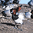 |
| Q, R |
| Red Legged Partridge |
Alectoris rufa |
very rare |
The only recorded sighting was 1 bird in a Gledhow Lane garden in April 1984. |
|
| Redpoll |
Carduelis flammea |
winter |
Seen annually in small flocks of up to 8 birds, but 18 on 7/4/96. |
|
| Redstart |
Phoenicurus phoenicurus |
very rare |
Extremely rare visitor. Bred up to 1962, but only sightings in Aug 83 and May 85 since then. |
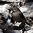 |
| Redwing |
Turdus iliacus |
winter |
Birds can be heard at night in early Oct and then throughout the winter, in numbers ranging from 1-100. Up to 50 birds usually winter in the woods. 40 on 01/03/01 with some birds singing, 25 on 25/03/02, 55 on 06/01/02 and 45 on 03/03/02. Visible migration seen in Oct as 100s of birds fly over. Earliest sighting 23/09/01, latest 13/04/00. |
|
| Reed Bunting |
Emberiza schoeniclus |
very rare |
No recent records. up to 1962, birds were seen occasionally in winter. |
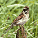 |
| Ring Ouzel |
Turdus torquatus |
very rare |
No sightings in Gledhow Valley, but 1 bird in Old Park Road, Roundhay in May 82. |
|
| Ring Necked Parakeet |
Psittacula krameri |
very rare |
A single bird first noted on 18/05/00. Seen regularly in the Gledhow area, visiting gardens for food. Last sighting on 20/05/01. |
|
| Robin |
Erithacus rubecula |
resident |
Between 24 and 30 pairs, joined by a few winter visitors. |
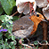 |
| Rock Pipit |
Anthus petrosus |
very rare |
A lone sighting of 1 bird over in Oct 88. |
|
| Rook |
Corvus frugilegus |
very rare |
Birds can be seen occasionally flying over on roost flights and at other times. |
|
| S |
| Sand Martin |
Riparia riparia |
very rare |
Extremely rare visitor. 1 bird seen on one occasion in June 1990. |
|
| Siskin |
Carduelis spinus |
winter |
Previously seen annually in flocks of 10-20 birds. One bird on a feeder 22/04/01 a more typical recent sighting. Becoming less frequent. |
|
| Skylark |
Alauda arvensis |
regular |
Regular flyover sightings. Birds seen and heard flying over mainly in winter periods. Birds seen before and after hard weather. 6 over 27/2/94 after snow/ice (see lapwings). Can be heard in song in flight in Feb/Mar. |
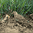 |
| Snipe |
Gallinago gallinago |
very rare |
A lone sighting in Aug 82', the only record. |
|
| Song Thrush |
Turdus philomelos |
resident |
Between 19 and 24 pairs and a few winter visitors. |
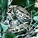 |
| Sparrowhawk |
Accipiter nisus |
resident |
A pair breed annually, usually rearing between 2 and 5 young. In 1989 1 male with 2 females and 2 nests produced 2 broods, 1 from each female. (1 young bird fell from the nest well before fledgling but was fed by the female and may have survived). |
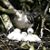 |
| Spotted Flycatcher |
Muscicapa striata |
very rare |
No sightings since 85, when there was a single bird in Sept. 3 pairs bred in 61, 4 pairs in 62, then breeding in 79, 81, 82, 83 and 84. |
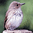 |
| Starling |
Sturnus vulgaris |
resident |
Resident & winter visitor. Breeds in the surrounding areas. Seen in the woods in May with birds searching for food for nestlings as in 40 on 13/5/92. Also pre roost gatherings in local streets. 85 birds in 1 tree 27/02/91. However, more recent maximum figures have been in the 12-18 region. |
|
| Stock Dove |
Columba oenas |
resident |
3-5 pairs in woods. Breeds - 5 pairs seen 22/4/94 |
|
| Swallow |
Hirundo rustica |
summer |
No local breeding, just occasional sightings between April and early Oct. Earliest sighting 23/4/87. Latest 3/10/90. |
|
| Swan Species |
|
very rare |
Only 1 record in October 1988 of a small party (6/7) flying over in poor visibility, called once 'quietly resonant'. |
|
| Swift |
Apus apus |
summer |
Summer visitor. Seen May to Aug feeding over the woods. Gatherings of up to 60 birds on summer evenings.150 noted on migration on 13/08/00. Earliest sighting 30/04/01 and latest 6/9/93. Late arrival in 2002, with the 1st arrivals on 10/05/02. |
|
| T |
| Tawny Owl |
Strix Aluco |
resident |
Up to 3 pairs breed. 1 bird roosted in the same hawthorn bush for 5 years running 1988-1992 in May for 5 weeks whilst hawthorn in full bloom. Very vocal Feb to April with 3 calling on 11/04/01. |
|
| Teal |
Anas crecca |
very rare |
One positive sighting only on 21/10/97. |
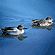 |
| Tree Pipit |
Anthus trivialis |
very rare |
No sightings in Gledhow Valley, but seen in the Gledhow/Roundhay area in Aug 80, Aug 84, Autumn 85 and Apr 86. |
|
| Tree Sparrow |
Passer montanus |
very rare |
Up to 1962, occasional birds in winter only. Birds feeding in a Gledhow garden Apr 79. 1 bird seen in a Gledhow garden 26/11/95. |
|
| Treecreeper |
Certhia familiaris |
resident |
3 pairs probably breed. Seen in mixed tit flocks in winter. |
|
| Tufted Duck |
Aythya fuligula |
annual |
Annual visitor in recent years only. In the last 4 years, between 2 and 14 birds have visited the lake throughout the year. |
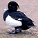 |
| U, V, W |
| Waxwing |
Bombycilla garrulus |
rare |
Rare visitor. One sighting of 8 birds in a tree next to the Gledhow Park Avenue shops in Mar 91. Also 2 over in Feb 77. 38 at Gledhow school 28/3/96. Then daily sightings from 9/4 to 15/4 1996 of between 9 and 56 birds. |
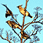 |
| Whimbrel |
Numenius phaeopus |
very rare |
Two sightings of 6 over north-west in Aug 1964 and 1 bird over calling 31/8/97. |
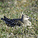 |
| Whinchat |
Saxicola rubetra |
very rare |
No sightings in Gledhow Valley, but sightings on Military Fields, Roundhay in May 83 and Aug 84. |
|
| Whitethroat |
Sylvia communis |
summer |
Bred up to 1962. Regularly seen in between 1987 and 1992 with a male displaying, but no evidence of breeding (no sightings in 93/5). Earliest sightings 02/05/90 and 02/05/97. Breeding attempt 96. Then pair bred-4 young fledged 97. Next sighting of a singing male on 10/05/02, with possibility of breeding. |
|
| Willow Tit |
Parus montanus |
occasional |
1 pair breeding proven in 1995 after birds seen excavating nest hole, then feeding young. Also bred 1996. Very few recent sightings. |
|
| Willow Warbler |
Phylloscupus trochilus |
passage migrant |
In recent years no proof of breeding, birds just passing through in April. Earliest sighting 3/4/99. Latest 12/9/90. |
|
| Wood Pigeon |
Columba palumbus |
resident |
Probably 8-10 pairs breed. In winter up to 150 birds feed in the woods, but only max. 30 winter 1994. |
|
| Wood Warbler |
Phylloscopus sibilatrix |
very rare |
Extremely rare summer visitor. One sighting of 1 bird on 21/4/89, singing and displaying. One bird singing in a hawthorn tree on 3/9/91. |
|
| Woodcock |
Scolopax rusticola |
winter |
Winter visitor. Seen in Winter periods 1990-91, 91-92, then Mar 94 and Jan 95. A dead bird found in Mar 93. Further sightings April 96 and April 99. Two sightings by dog walkers in Jan and March 2001. One flew across Gledhow Park avenue on 27/02/01 and the latest sighting of a singleton flushed by a dog in April 2002. |
|
| Wren |
Troglodytes troglodytes |
resident |
Between 22 and 32 pairs. Very loud participant in the Dawn Chorus. |
|
| X, Y |
| Yellow Wagtail |
Motacilla flava |
very rare |
No sightings in Gledhow Valley, but 1 bird on Gledhow playing fields in Aug 84. |
|
| Yellowhammer |
Emberiza citrinella |
very rare |
Up to 1962 there were occasional breeding records. In recent years, only very occasional fly over birds. One bird in Chapel Allerton Hospital grounds in Feb 91. |
|
| Z |


;){kind=link}
;){kind=link}
;){kind=link}
;){kind=link}
;){kind=link}
;){kind=link}
;){kind=link}
;){kind=link}
;){kind=link}
;){kind=link}
;){kind=link}
;){kind=link}
;){kind=link}
;){kind=link}
;){kind=link}
;){kind=link}
;){kind=link}
;){kind=link}
;){kind=link}
;){kind=link}
;){kind=link}
;){kind=link}
;){kind=link}
;){kind=link}
;){kind=link}
;){kind=link}
;){kind=link}
;){kind=link}
;){kind=link}
;){kind=link}
;){kind=link}
;){kind=link}
;){kind=link}
;){kind=link}
;){kind=link}
;){kind=link}
;){kind=link}
;){kind=link}
;){kind=link}
;){kind=link}
;){kind=link}
;){kind=link}
;){kind=link}
;){kind=link}
;){kind=link}
;){kind=link}
;){kind=link}
;){kind=link}
;){kind=link}
;){kind=link}
;){kind=link}
;){kind=link}
;){kind=link}
;){kind=link}
;){kind=link}
;){kind=link}